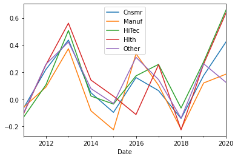
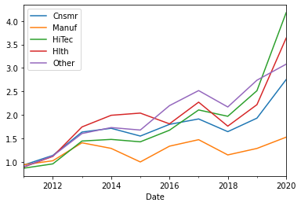

import pandas as pd
import numpy as np
import pandas_datareader as pdr
pd.options.display.max_rows = 20L13: Conditional stats, outliers
Lecture overview
In this lecture we introduce a set of Pandas functions that are very useful in describing subsamples of your data (this is often called “subsample analysis”). Looking at subsamples of your data individually is important because patterns that show up in your overall dataset may look quite different if you limit yourself to a subset of the dataset. This is exemplified in Simpson’s Paradox: https://en.wikipedia.org/wiki/Simpson%27s_paradox.
We finish the lecture with a discussion of the impact of outliers on your descriptive statistics, and a method of mitigating that impact called “windsorization”.
Preliminaries
We’ll use data on the Fama-French 5-industry portfolio returns for this lecture:
raw = pdr.DataReader(name = '5_Industry_Portfolios', data_source = 'famafrench',
start = '2011-01-01', end = '2020-12-31')
raw{0: Cnsmr Manuf HiTec Hlth Other
Date
2011-01 -1.34 4.20 3.00 -0.71 1.92
2011-02 2.89 4.87 3.45 3.33 2.63
2011-03 1.89 1.81 -0.83 2.29 -0.86
2011-04 4.36 2.58 3.16 6.37 1.11
2011-05 0.92 -2.55 -1.13 1.96 -2.40
... ... ... ... ... ...
2020-08 10.07 3.15 10.00 2.45 7.20
2020-09 -4.01 -2.24 -4.82 -1.47 -2.98
2020-10 -2.64 -0.03 -2.02 -4.42 -1.88
2020-11 11.44 12.91 11.16 9.51 15.76
2020-12 4.09 2.65 4.99 4.77 5.27
[120 rows x 5 columns],
1: Cnsmr Manuf HiTec Hlth Other
Date
2011-01 -0.54 3.64 3.18 1.26 1.88
2011-02 4.14 5.50 5.49 3.46 2.92
2011-03 1.15 3.33 0.88 2.77 -0.48
2011-04 2.32 0.47 1.45 5.02 0.23
2011-05 -1.00 -3.48 -1.78 -0.18 -2.72
... ... ... ... ... ...
2020-08 9.79 3.39 4.02 1.41 5.59
2020-09 -1.96 -4.15 -2.97 -1.14 -3.47
2020-10 2.54 0.97 0.23 -2.71 4.03
2020-11 22.36 23.25 22.36 18.58 18.45
2020-12 6.13 9.22 11.49 9.74 9.02
[120 rows x 5 columns],
2: Cnsmr Manuf HiTec Hlth Other
Date
2011 9.05 4.47 0.49 10.87 -9.89
2012 16.30 8.81 16.73 20.35 22.27
2013 32.99 29.18 33.65 41.19 40.86
2014 12.63 3.38 14.48 24.46 12.34
2015 6.79 -11.64 3.83 5.80 -1.15
2016 5.48 20.34 13.98 -1.85 20.17
2017 18.68 18.17 29.50 22.20 21.52
2018 -3.58 -11.10 -0.59 4.82 -9.23
2019 25.88 21.21 41.85 20.20 29.50
2020 37.64 0.26 42.65 18.31 6.88,
3: Cnsmr Manuf HiTec Hlth Other
Date
2011 -6.73 -6.02 -13.44 -10.95 -10.41
2012 21.99 8.97 10.64 25.44 25.82
2013 43.72 37.33 50.77 56.15 42.26
2014 4.87 -8.46 2.41 14.20 7.92
2015 -9.62 -22.43 -3.48 2.35 -3.05
2016 16.05 33.62 17.30 -11.21 30.99
2017 6.42 10.37 25.78 25.49 14.59
2018 -14.13 -22.04 -6.41 -22.48 -13.87
2019 17.49 12.04 27.63 25.96 26.27
2020 42.47 18.60 65.97 63.85 12.45,
4: Cnsmr Manuf HiTec Hlth Other
Date
2011-01 613 720 790 457 1182
2011-02 611 715 783 453 1180
2011-03 604 711 778 450 1174
2011-04 600 709 767 445 1162
2011-05 596 706 761 443 1154
... ... ... ... ... ...
2020-08 481 557 633 719 1022
2020-09 479 554 630 718 1020
2020-10 479 550 628 712 1013
2020-11 479 548 627 710 1011
2020-12 475 548 624 706 1010
[120 rows x 5 columns],
5: Cnsmr Manuf HiTec Hlth Other
Date
2011-01 4021.78 4907.75 4617.97 2797.17 2823.79
2011-02 3978.53 5133.19 4789.86 2794.87 2880.75
2011-03 4122.09 5396.87 4968.89 2890.04 2966.86
2011-04 4213.62 5503.13 4974.81 2936.50 2966.20
2011-05 4422.42 5657.10 5157.11 3134.23 3012.30
... ... ... ... ... ...
2020-08 12344.23 7837.49 19959.78 4733.39 6902.46
2020-09 13628.75 8094.48 22037.83 4845.20 7402.98
2020-10 13059.65 7942.45 21034.62 4752.32 7187.19
2020-11 12707.13 7957.86 20625.15 4534.52 7057.75
2020-12 14223.39 8951.70 22998.28 4986.10 8166.06
[120 rows x 5 columns],
6: Cnsmr Manuf HiTec Hlth Other
Date
2011 0.31 0.41 0.34 0.35 0.67
2012 0.30 0.47 0.34 0.33 0.74
2013 0.27 0.44 0.32 0.27 0.62
2014 0.26 0.38 0.28 0.23 0.55
2015 0.24 0.44 0.26 0.20 0.54
2016 0.23 0.41 0.28 0.22 0.60
2017 0.24 0.38 0.24 0.20 0.48
2018 0.22 0.38 0.21 0.19 0.46
2019 0.22 0.41 0.20 0.19 0.46
2020 0.22 0.48 0.18 0.19 0.57,
7: Cnsmr Manuf HiTec Hlth Other
Date
2011 0.32 0.44 0.35 0.39 0.65
2012 0.32 0.47 0.38 0.36 0.84
2013 0.31 0.48 0.36 0.32 0.74
2014 0.27 0.42 0.29 0.25 0.57
2015 0.24 0.40 0.26 0.21 0.55
2016 0.24 0.47 0.29 0.22 0.56
2017 0.24 0.37 0.26 0.23 0.51
2018 0.21 0.39 0.22 0.20 0.44
2019 0.24 0.45 0.25 0.21 0.53
2020 0.20 0.52 0.18 0.19 0.42,
'DESCR': '5 Industry Portfolios\n---------------------\n\nThis file was created by CMPT_IND_RETS using the 202201 CRSP database. It contains value- and equal-weighted returns for 5 industry portfolios. The portfolios are constructed at the end of June. The annual returns are from January to December. Missing data are indicated by -99.99 or -999. Copyright 2022 Kenneth R. French\n\n 0 : Average Value Weighted Returns -- Monthly (120 rows x 5 cols)\n 1 : Average Equal Weighted Returns -- Monthly (120 rows x 5 cols)\n 2 : Average Value Weighted Returns -- Annual (10 rows x 5 cols)\n 3 : Average Equal Weighted Returns -- Annual (10 rows x 5 cols)\n 4 : Number of Firms in Portfolios (120 rows x 5 cols)\n 5 : Average Firm Size (120 rows x 5 cols)\n 6 : Sum of BE / Sum of ME (10 rows x 5 cols)\n 7 : Value-Weighted Average of BE/ME (10 rows x 5 cols)'}Extract equal-weighted annual industry returns, and turn them to decimal (they are in percentage points):
ew = raw[3]/100
ew| Cnsmr | Manuf | HiTec | Hlth | Other | |
|---|---|---|---|---|---|
| Date | |||||
| 2011 | -0.0673 | -0.0602 | -0.1344 | -0.1095 | -0.1041 |
| 2012 | 0.2199 | 0.0897 | 0.1064 | 0.2544 | 0.2582 |
| 2013 | 0.4372 | 0.3733 | 0.5077 | 0.5615 | 0.4226 |
| 2014 | 0.0487 | -0.0846 | 0.0241 | 0.1420 | 0.0792 |
| 2015 | -0.0962 | -0.2243 | -0.0348 | 0.0235 | -0.0305 |
| 2016 | 0.1605 | 0.3362 | 0.1730 | -0.1121 | 0.3099 |
| 2017 | 0.0642 | 0.1037 | 0.2578 | 0.2549 | 0.1459 |
| 2018 | -0.1413 | -0.2204 | -0.0641 | -0.2248 | -0.1387 |
| 2019 | 0.1749 | 0.1204 | 0.2763 | 0.2596 | 0.2627 |
| 2020 | 0.4247 | 0.1860 | 0.6597 | 0.6385 | 0.1245 |
Let’s take a look at the data:
ew.plot();
Calculate cumulative products of gross returns (i.e. compound returns over time) and plot them:
(1+ew).cumprod().plot();
Stack industry returns on top of each other for the purpose of this class:
ew_long = ew.stack().to_frame(name = 'ewret')
ew_long.head(10)| ewret | ||
|---|---|---|
| Date | ||
| 2011 | Cnsmr | -0.0673 |
| Manuf | -0.0602 | |
| HiTec | -0.1344 | |
| Hlth | -0.1095 | |
| Other | -0.1041 | |
| 2012 | Cnsmr | 0.2199 |
| Manuf | 0.0897 | |
| HiTec | 0.1064 | |
| Hlth | 0.2544 | |
| Other | 0.2582 |
And bring date and industry names as data inside the dataframe:
ew_long = ew_long.reset_index().rename(columns = {'level_1':'Industry'})
ew_long.head(2)| Date | Industry | ewret | |
|---|---|---|---|
| 0 | 2011 | Cnsmr | -0.0673 |
| 1 | 2011 | Manuf | -0.0602 |
Challenge:
Do the same for value-weighted annual returns (i.e. create a “vw_long” dataframe, using the same steps we used for “ew_long”:
vw = raw[2]/100
vw| Cnsmr | Manuf | HiTec | Hlth | Other | |
|---|---|---|---|---|---|
| Date | |||||
| 2011 | 0.0905 | 0.0447 | 0.0049 | 0.1087 | -0.0989 |
| 2012 | 0.1630 | 0.0881 | 0.1673 | 0.2035 | 0.2227 |
| 2013 | 0.3299 | 0.2918 | 0.3365 | 0.4119 | 0.4086 |
| 2014 | 0.1263 | 0.0338 | 0.1448 | 0.2446 | 0.1234 |
| 2015 | 0.0679 | -0.1164 | 0.0383 | 0.0580 | -0.0115 |
| 2016 | 0.0548 | 0.2034 | 0.1398 | -0.0185 | 0.2017 |
| 2017 | 0.1868 | 0.1817 | 0.2950 | 0.2220 | 0.2152 |
| 2018 | -0.0358 | -0.1110 | -0.0059 | 0.0482 | -0.0923 |
| 2019 | 0.2588 | 0.2121 | 0.4185 | 0.2020 | 0.2950 |
| 2020 | 0.3764 | 0.0026 | 0.4265 | 0.1831 | 0.0688 |
vw_long = vw.stack().to_frame(name = 'vwret')\
.reset_index().rename(columns={'level_1':'Industry'})
vw_long.head()| Date | Industry | vwret | |
|---|---|---|---|
| 0 | 2011 | Cnsmr | 0.0905 |
| 1 | 2011 | Manuf | 0.0447 |
| 2 | 2011 | HiTec | 0.0049 |
| 3 | 2011 | Hlth | 0.1087 |
| 4 | 2011 | Other | -0.0989 |
Merge the EW returns and VW returns into a single dataframe called “ireturns”:
ireturns = ew_long.merge(vw_long, how='inner', on = ['Date','Industry'])
ireturns.head(10)| Date | Industry | ewret | vwret | |
|---|---|---|---|---|
| 0 | 2011 | Cnsmr | -0.0673 | 0.0905 |
| 1 | 2011 | Manuf | -0.0602 | 0.0447 |
| 2 | 2011 | HiTec | -0.1344 | 0.0049 |
| 3 | 2011 | Hlth | -0.1095 | 0.1087 |
| 4 | 2011 | Other | -0.1041 | -0.0989 |
| 5 | 2012 | Cnsmr | 0.2199 | 0.1630 |
| 6 | 2012 | Manuf | 0.0897 | 0.0881 |
| 7 | 2012 | HiTec | 0.1064 | 0.1673 |
| 8 | 2012 | Hlth | 0.2544 | 0.2035 |
| 9 | 2012 | Other | 0.2582 | 0.2227 |
Grouping your data: the .groupby() function
The .groupby() function can be used to tell Python that you want to split your data into groups. The parameters of the .groupby() function tell Python how those groups should be created. The purpose is usually to apply some function (e.g. the “.mean()” function) to each of these groups separately.
Abbreviated syntax:
DataFrame.groupby(by=None, axis=0, level=None, as_index=True, sort=True, dropna=True)The most important parameter is by. This is where you tell Python which column (or index) in your DataFrame contains the information based on which you want to group your data. Python will split your DataFrame into “mini” dataframes, one for each unique value of the variable(s) you supplied to the by parameter.
For example, the line below splits ireturns into 5 different dataframes, one for each unique entry found in the “Industry” column, and then applies the .mean() function for each of these 5 dataframes separately. Finally, these subsample means are all collected into a new dataframe ind_means:
ind_means = ireturns.groupby(by = 'Industry').mean()
ind_means| ewret | vwret | |
|---|---|---|
| Industry | ||
| Cnsmr | 0.12253 | 0.16186 |
| HiTec | 0.17717 | 0.19657 |
| Hlth | 0.16880 | 0.16635 |
| Manuf | 0.06198 | 0.08308 |
| Other | 0.13297 | 0.13327 |
If you don’t want the by variable (i.e. “Industry” in the example above) to be the index of the resulting dataframe:
ind_means = ireturns.groupby(by = 'Industry', as_index = False).mean()
ind_means| Industry | ewret | vwret | |
|---|---|---|---|
| 0 | Cnsmr | 0.12253 | 0.16186 |
| 1 | HiTec | 0.17717 | 0.19657 |
| 2 | Hlth | 0.16880 | 0.16635 |
| 3 | Manuf | 0.06198 | 0.08308 |
| 4 | Other | 0.13297 | 0.13327 |
Another example, with a different by variable and a different function applied to each group (i.e. median instead of mean):
an_means = ireturns.groupby(by = 'Date').median()
an_means| ewret | vwret | |
|---|---|---|
| Date | ||
| 2011 | -0.1041 | 0.0447 |
| 2012 | 0.2199 | 0.1673 |
| 2013 | 0.4372 | 0.3365 |
| 2014 | 0.0487 | 0.1263 |
| 2015 | -0.0348 | 0.0383 |
| 2016 | 0.1730 | 0.1398 |
| 2017 | 0.1459 | 0.2152 |
| 2018 | -0.1413 | -0.0358 |
| 2019 | 0.2596 | 0.2588 |
| 2020 | 0.4247 | 0.1831 |
You can group by more than one variable:
twodim = ireturns.groupby(by = ['Date','Industry']).mean()
twodim.head(10)| ewret | vwret | ||
|---|---|---|---|
| Date | Industry | ||
| 2011 | Cnsmr | -0.0673 | 0.0905 |
| HiTec | -0.1344 | 0.0049 | |
| Hlth | -0.1095 | 0.1087 | |
| Manuf | -0.0602 | 0.0447 | |
| Other | -0.1041 | -0.0989 | |
| 2012 | Cnsmr | 0.2199 | 0.1630 |
| HiTec | 0.1064 | 0.1673 | |
| Hlth | 0.2544 | 0.2035 | |
| Manuf | 0.0897 | 0.0881 | |
| Other | 0.2582 | 0.2227 |
The example above did not really change the ireturns dataframe, since each “Date” x “Industry” pair has a single entry for both “ewret” and “vwret”. Since the mean of a single number is the number itself, the twodim dataframe will be identical to ireturns. Note that this is not necessarily the case if we used a different function instead of .mean(), for example .count():
twodim = ireturns.groupby(by = ['Date','Industry']).count()
twodim.head(10)| ewret | vwret | ||
|---|---|---|---|
| Date | Industry | ||
| 2011 | Cnsmr | 1 | 1 |
| HiTec | 1 | 1 | |
| Hlth | 1 | 1 | |
| Manuf | 1 | 1 | |
| Other | 1 | 1 | |
| 2012 | Cnsmr | 1 | 1 |
| HiTec | 1 | 1 | |
| Hlth | 1 | 1 | |
| Manuf | 1 | 1 | |
| Other | 1 | 1 |
You can specify which variable(s) you want to apply the function to, in brackets, right before the function name (if you leave this out (like above), the function will be applied to all the columns in the dataframe):
ind_ew_medians = ireturns.groupby('Industry')['ewret'].median()
ind_ew_mediansIndustry
Cnsmr 0.11235
HiTec 0.13970
Hlth 0.19820
Manuf 0.09670
Other 0.13520
Name: ewret, dtype: float64The .apply() and .transform() methods
The .apply() and .transform() methods do similar things: they can be used to tell Python to apply a given function to some data from a dataframe. As the examples above show, there are many Pandas functions, like .mean() and .median() that can do this without the help of .apply() or .transform() (we just have to add the names of these functions after the .groupby() statement, just like we did above). But what if the function we want to apply is not a built-in Pandas function that can be applied with a dot after the name of a dataframe? This is where .apply() and .transform() come in handy. These methods are especially useful when we want to apply a particular function, separately, to each group we created with a .groupby statement.
Here is their syntax:
Syntax for .transform():
DataFrame.transform(func, axis=0, *args, **kwargs)Syntax for .apply():
DataFrame.apply(func, axis=0, raw=False, result_type=None, args=(), **kwargs)The most important argument is func which is where we tell Python which function we want to apply to the data.
The main difference between .transform() and .apply() is that .transform() returns a sequence of the same length as the dataframe to which it is applied, while .apply() returns a DataFrame or Series of the same size as the number of groups to which it is applied.
ireturns.groupby('Industry')['ewret'].apply(func = np.median)Industry
Cnsmr 0.11235
HiTec 0.13970
Hlth 0.19820
Manuf 0.09670
Other 0.13520
Name: ewret, dtype: float64ireturns.groupby('Industry')['ewret'].transform(func = np.median)0 0.11235
1 0.09670
2 0.13970
3 0.19820
4 0.13520
...
45 0.11235
46 0.09670
47 0.13970
48 0.19820
49 0.13520
Name: ewret, Length: 50, dtype: float64We usually add the results of .transform() as a new column to the same dataframe:
mycopy = ireturns.copy()
mycopy['ind_medians'] = mycopy.groupby('Industry')['ewret'].transform(np.median)
mycopy.head(10)| Date | Industry | ewret | vwret | ind_medians | |
|---|---|---|---|---|---|
| 0 | 2011 | Cnsmr | -0.0673 | 0.0905 | 0.11235 |
| 1 | 2011 | Manuf | -0.0602 | 0.0447 | 0.09670 |
| 2 | 2011 | HiTec | -0.1344 | 0.0049 | 0.13970 |
| 3 | 2011 | Hlth | -0.1095 | 0.1087 | 0.19820 |
| 4 | 2011 | Other | -0.1041 | -0.0989 | 0.13520 |
| 5 | 2012 | Cnsmr | 0.2199 | 0.1630 | 0.11235 |
| 6 | 2012 | Manuf | 0.0897 | 0.0881 | 0.09670 |
| 7 | 2012 | HiTec | 0.1064 | 0.1673 | 0.13970 |
| 8 | 2012 | Hlth | 0.2544 | 0.2035 | 0.19820 |
| 9 | 2012 | Other | 0.2582 | 0.2227 | 0.13520 |
Note, also, that with .transform(), you can pass the name of the function you want as a string to the func argument, whereas with .apply() you can not:
ireturns.groupby('Industry')[['ewret','vwret']].transform('median') | ewret | vwret | |
|---|---|---|
| 0 | 0.11235 | 0.14465 |
| 1 | 0.09670 | 0.06640 |
| 2 | 0.13970 | 0.15605 |
| 3 | 0.19820 | 0.19255 |
| 4 | 0.13520 | 0.16255 |
| ... | ... | ... |
| 45 | 0.11235 | 0.14465 |
| 46 | 0.09670 | 0.06640 |
| 47 | 0.13970 | 0.15605 |
| 48 | 0.19820 | 0.19255 |
| 49 | 0.13520 | 0.16255 |
50 rows × 2 columns
Whereas the line below will not work. You have to specify which package the “median” function belongs to (which is why we used .apply(np.median) above):
#ireturns.groupby('Industry')[['ewret','vwret']].apply('median') #this gives an errorWe are not restricted to applying functions that come with a package that we have installed. We can also use a function that we created ourselves.
For example, below, we create a function that can take in a Series or a DataFrame of returns, and compounds them:
def compound_returns(x):
return (1+x).prod()-1Now we can apply that function to the returns of each industry:
ireturns.groupby('Industry')[['ewret','vwret']].apply(compound_returns)| ewret | vwret | |
|---|---|---|
| Industry | ||
| Cnsmr | 1.751321 | 3.242533 |
| HiTec | 3.174702 | 4.532945 |
| Hlth | 2.634393 | 3.435179 |
| Manuf | 0.525684 | 1.060787 |
| Other | 2.079929 | 2.161870 |
Let’s see if it worked:
(1+ew).cumprod()-1 #look at the bottom row and compare it with our results above| Cnsmr | Manuf | HiTec | Hlth | Other | |
|---|---|---|---|---|---|
| Date | |||||
| 2011 | -0.067300 | -0.060200 | -0.134400 | -0.109500 | -0.104100 |
| 2012 | 0.137801 | 0.024100 | -0.042300 | 0.117043 | 0.127221 |
| 2013 | 0.635247 | 0.406397 | 0.443924 | 0.744263 | 0.603585 |
| 2014 | 0.714884 | 0.287415 | 0.478723 | 0.991948 | 0.730589 |
| 2015 | 0.549912 | -0.001352 | 0.427263 | 1.038759 | 0.677806 |
| 2016 | 0.798673 | 0.334394 | 0.674180 | 0.810214 | 1.197758 |
| 2017 | 0.914148 | 0.472770 | 1.105783 | 1.271638 | 1.518411 |
| 2018 | 0.643679 | 0.148172 | 0.970802 | 0.760974 | 1.169108 |
| 2019 | 0.931158 | 0.286412 | 1.515335 | 1.218122 | 1.738932 |
| 2020 | 1.751321 | 0.525684 | 3.174702 | 2.634393 | 2.079929 |
Winsorizing outliers
“Winsorizing” a variable means replacing its most extreme values with less extreme values. For example, winsorizing a variable “at the 5 and 95 percentiles”, means that the values of that variable that are smaller than the 5th percentile will be made equal to the 5th percentile and the values that are larger than the 95th percentile will be made equal to the 95th percentile.
You can pick other values for the percentiles at which you want to winsorize but (1,99) and (5, 95) are by far the most common ones.
To winsorize a variable, in a Pandas dataframe, we use the .clip() function as below. This also requires us to use the .quantile() function to calculate the 5th and 95th percentiles. First, let’s sort the returns so we can easily see its most extreme values (top and bottom):
ew_long.sort_values('ewret')| Date | Industry | ewret | |
|---|---|---|---|
| 38 | 2018 | Hlth | -0.2248 |
| 21 | 2015 | Manuf | -0.2243 |
| 36 | 2018 | Manuf | -0.2204 |
| 35 | 2018 | Cnsmr | -0.1413 |
| 39 | 2018 | Other | -0.1387 |
| ... | ... | ... | ... |
| 10 | 2013 | Cnsmr | 0.4372 |
| 12 | 2013 | HiTec | 0.5077 |
| 13 | 2013 | Hlth | 0.5615 |
| 48 | 2020 | Hlth | 0.6385 |
| 47 | 2020 | HiTec | 0.6597 |
50 rows × 3 columns
Let’s calculate the 5th and 95th percentiles:
q5 = ew_long['ewret'].quantile(0.05)
q5-0.184805q95 = ew_long['ewret'].quantile(0.95)
q950.5372899999999998And now let’s create a version of ewret that is winsorized at the 5 and 95 percentiles:
ew_long['ew_wins'] = ew_long['ewret'].clip(lower = q5, upper = q95)Let’s see if it worked:
ew_long.sort_values('ewret')| Date | Industry | ewret | ew_wins | |
|---|---|---|---|---|
| 38 | 2018 | Hlth | -0.2248 | -0.184805 |
| 21 | 2015 | Manuf | -0.2243 | -0.184805 |
| 36 | 2018 | Manuf | -0.2204 | -0.184805 |
| 35 | 2018 | Cnsmr | -0.1413 | -0.141300 |
| 39 | 2018 | Other | -0.1387 | -0.138700 |
| ... | ... | ... | ... | ... |
| 10 | 2013 | Cnsmr | 0.4372 | 0.437200 |
| 12 | 2013 | HiTec | 0.5077 | 0.507700 |
| 13 | 2013 | Hlth | 0.5615 | 0.537290 |
| 48 | 2020 | Hlth | 0.6385 | 0.537290 |
| 47 | 2020 | HiTec | 0.6597 | 0.537290 |
50 rows × 4 columns